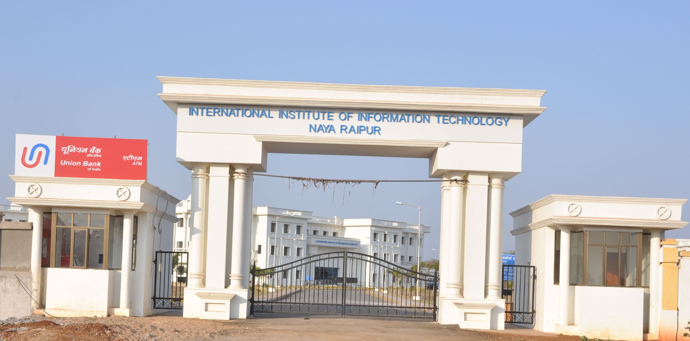

IIIT-Naya Raipur, formally known as the Dr. Shyama Prasad Mukherjee International Institute of Information Technology, Naya Raipur, is a premier institute focused on information technology and allied disciplines. Established in 2013 in the smart city of Naya Raipur, Chhattisgarh, it offers undergraduate, postgraduate, and doctoral programs with an emphasis on research and innovation. The institute fosters a dynamic learning environment, blending rigorous academics with practical exposure. With state-of-the-art infrastructure, experienced faculty, and industry-oriented curricula, IIIT-Naya Raipur equips students to excel in technology-driven fields and contribute to the ever-evolving IT industry.